Abstract
Recent advances in garment pattern generation have shown promising progress. However, existing feed-forward methods struggle with diverse poses and viewpoints, while optimization-based approaches are computationally expensive and difficult to scale. This paper focuses on sewing pattern generation for garment modeling and fabrication applications that demand editable, separable, and simulation-ready garments. We propose DressWild, a novel feed-forward pipeline that reconstructs physics-consistent 2D sewing patterns and the corresponding 3D garments from a single in-the-wild image. Given an input image, our method leverages vision–language models (VLMs) to normalize pose variations at the image level, then extract pose-aware, 3D-informed garment features. These features are fused through a transformer-based encoder and subsequently used to predict sewing pattern parameters, which can be directly applied to physical simulation, texture synthesis, and multi-layer virtual try-on. Extensive experiments demonstrate that our approach robustly recovers diverse sewing patterns and the corresponding 3D garments from in-the-wild images without requiring multi-view inputs or iterative optimization, offering an efficient and scalable solution for realistic garment simulation and animation.
Pipeline & Data Curation
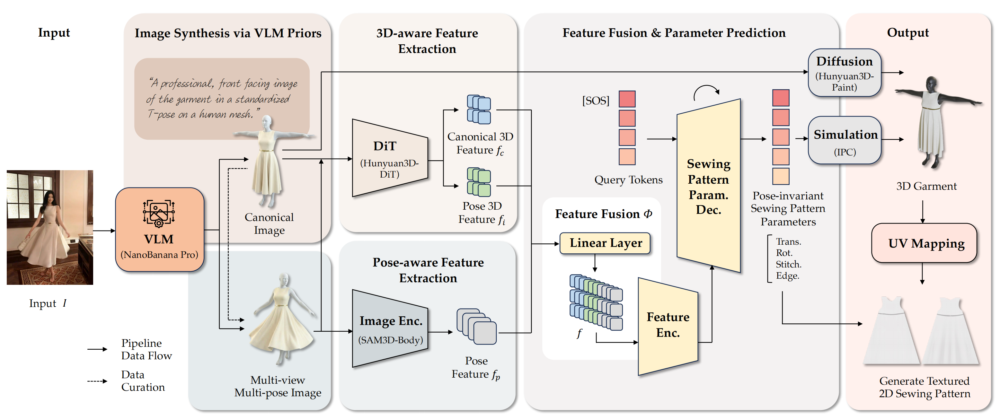
Given an in-the-wild image, DressWild reconstructs simulation-ready sewing patterns and a corresponding 3D garment.
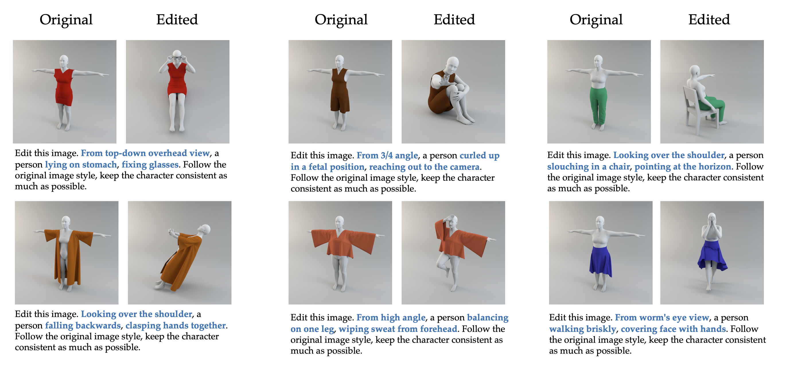
We leverage the robust capabilities of VLMs to bridge the pose discrepancy and data gap between the training and inference stages. While our training dataset consists primarily of canonical frontal T-pose data, in-the-wild images exhibit diverse and unconstrained poses. To address this, we design a novel data curation paradigm. Specifically, we craft a comprehensive set of tailored prompts for pose, view, and scene editing to synthesize a large volume of multi-pose and multi-view images.
Experiments
Comparison with Feedforward 2D Sewing Pattern Generation Methods: We show the comparison of 2D sewing pattern results of DressWild and other feedforward methods. The left column shows the input images, the right column shows the 2D sewing pattern and 3D garment results of different methods. Our DressWild outperforms other baseline methods and can get better 2D sewing pattern and 3D garment results.
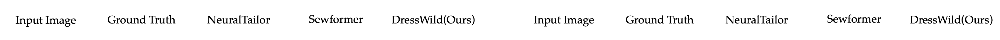
Some More 3D Garment Results of DressWild: We show more 3D garment results of DressWild. The left column shows the input images, and the right column shows the corresponding 3D garments reconstructed by DressWild.
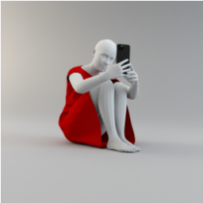
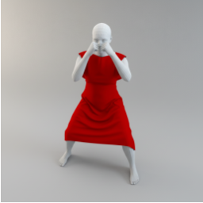
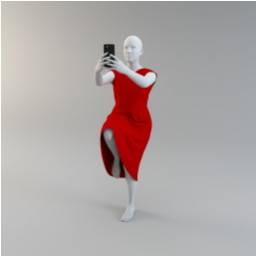
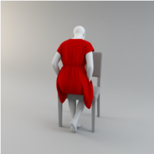
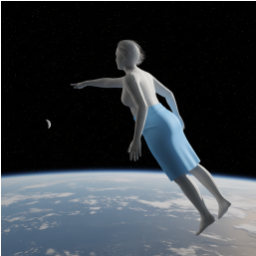
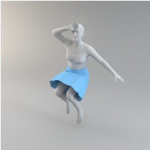
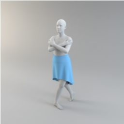
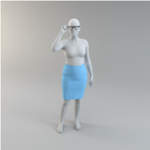
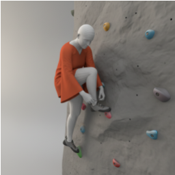
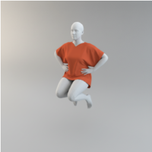
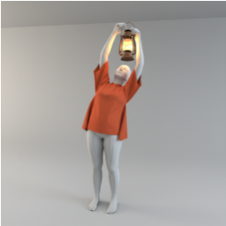
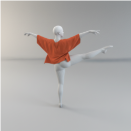
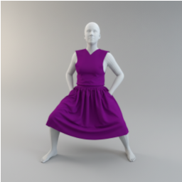
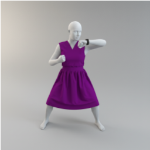
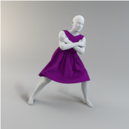
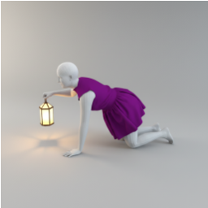
Results of In-the-wild Images: We show more results of DressWild on in-the-wild images. The left column shows the input images, the middle column shows the 2D sewing pattern results, and the right column shows the corresponding 3D garments reconstructed by DressWild.
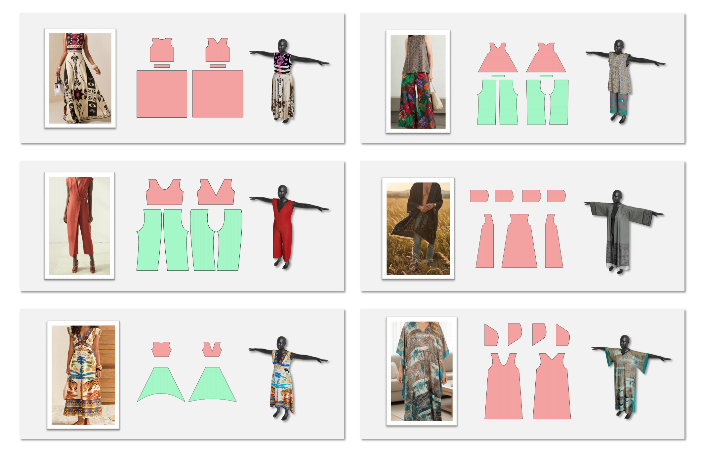